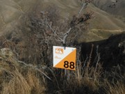

Dear Rogainer,
In this newsletter:
- Bannockburn Rogaine in 2 weeks.
- Other Events coming up
- Recent Event results
- WRC2014, Black Hills, South Dakota – registration opens
in
October
- No NZ Champs this year
Mt Outdoors Wanaka Rogaine
Bannockburn, Central Otago, Saturday 14th
September
Not far away now, don’t miss out - it is time to pull your team
together and to enter the 
Bannockburn rogaine
organised by Ed Stevens
and Terry Davis. There will be 12hr, 6hr and family 3hr events, and a
6hr MTB option, in inspiring and historical Central Otago landscapes.
See the Highland Events website, http://www.highlandevents.co.nz/rogaine,
for detailed information and online entry. Also take a look at a few
pictures and a couple of videos at http://www.highlandevents.co.nz/mitre-10-wanaka-lowburn-rogaine.
Other Events coming up
Hamels Haunts IIIb
Dunedin, Sunday September 8th (the weekend prior to Bannockburn)
Following on from Hamels
Haunts III, Matt Bixley is organising
a “b” version. This is another training event with the ladies’ Spring
Challenge in mind, but it is open to all-comers. Meet at the Whare Flat
Car Park at 1pm for up to 4hrs of navigation and route finding
practice. See Matt’s facebook page,
https://www.facebook.com/events/269102113232051/
for up-to-date
information. Matt's contact is matt.bixley@agresearch.co.nz
or phone
021 046 9255.
Why “Hamels Haunts”? - see
http://www.odt.co.nz/your-town/dunedin/37778/walker-delights-dunedin039s-tracks
and an interview at http://www.ch9.co.nz/node/96340.
Welly Afterwork Series, April to November
A series of 3hr afterwork Rogaines at monthly
intervals in the
Wellington region under the auspices of O Hutt Valley. The next event
is on Tuesday 10th September. If any non-Wellingtonian happens to be in
Wellington on the dates of these events they are sure to be most
welcome to join in the fun. See the Maptalk calendar,
http://www.maptalk.co.nz/events/default.cfm?t=Rogaine,
for details of
the Welly Series.
Event Calendars
Keep your eye on:
- the NZRA website event calendar at http://www.rogaine.org.nz/
and
- the Maptalk website, http://www.maptalk.co.nz/events/default.cfm?t=Rogaine
for details of future rogaines.
Further future events that we know of
Check the NZRA event calendar at http://www.rogaine.org.nz/
for more detail on these as it becomes available.
- Canterbury Series – Saturday 19th October
- Karekare
Gladefest, Auckland – Saturday 16th November
- The Golden Road, Otago – Saturday 23rd November
- Belmont Regional Park, Wellington – Saturday 30th November
Recent Event Results
11th World Rogaining Championships, Russia, 26th - 27th July
Vivienne Prince, partnered with Richard Robinson
(Australia), was the sole New Zealand representative at the World
Champs in Russia. With 2090pts they finished 4th  XSV and 102nd overall,
140pts behind the winning XSV team. Latvian teams filled the top
three
XSV places.
XSV and 102nd overall,
140pts behind the winning XSV team. Latvian teams filled the top
three
XSV places.
Vivienne relates
her experiences in a report which will be on the NZRA
website soon. Viv and Richard may be disappointed with their “24 hours
of aimless wanderings in the swamp” but they are credited with being
16th (amongst 314 teams) in the most efficient
planners stakes.
For full results see the event website at http://wrc2013.com/
and take
a look at the map
(4.8MB), notable for vast expanses of blue – no
chance of keeping dry feet there.
The winning Eensaar brothers from Estonia reflect on their performance
in their blog at
http://tpmv.blogspot.com.au/2013/08/rogaining-world-championships-2013-alol.html.
Hamels Haunts III, Dunedin, Sunday July 28th
Matt Bixley’s
minimalist training rogaine based at the
Bullring was somewhat swamped with twice as many as expected turning
up. Matt coped; although the soup was a trifle watery. So popular was
the event that, as noted in future events above, a second training run
is scheduled for 8th September. See
http://runlongergeek.wordpress.com/2013/08/02/hamels-haunts-iii-results/
for results and report.
Equestrian Rogaine 2013, Sunday 4th August
The second
equestrian rogaine, organised by Stuart Payne and
Carol Fowler in support of Darfield High School’s rural college,
attracted 88 riders and their steeds. This year the event shared the
Burwood Forest with runners, walkers, and mountain bikers and the
horses were therefore restricted to dedicated horse trails. To make the
most of the course a 2hr foot rogaine was held as well. See
http://www.rogaine.org.nz/main/Results/BottleLakeEquestrianResults.pdf
for the organisers’ comments and results.
Welly Afterwork, Thursday 15th August
The 5th event in
the 2013 Welly Afterwork Series was run on
Thursday 15th August. 60 runners and walkers were attracted to this
event in some typically tough Wellington terrain. See the report by
organiser Kelvin Thiele and the results at
http://www.mapsport.co.nz/wellyrog/awrog13res.html.
Next WRC – registration opens in October
The
12th World Rogaining Championships will be in the Black
Hills of South Dakota, 16th & 17th August, 2014. The event centre
is 50
minutes west of Rapid City. As usual there will be places reserved for
top performers in previous WRC, regional championships and national
championships. However, there are a total of 1000 places available so
many non-prequalifying people should get in. Registration is scheduled
to open in October. We have no way of knowing whether the number of
places will be exceeded but those registering in the first 14 days have
an improved chance of being accepted. So, if you wish to compete in the
Black Hills, get sorted and ready to register. See the note
on
registration on the NZRA website. Also keep up to date via the
event
website, http://peakassurance.net/,
and the event blog,
http://peakassurance.net/Blog/Blog.html.
Looking a
long way ahead, but close to home, the 2016 World
Championships will be near Alice Springs in Central Australia. The
Australian championships were run there in 2007. It is a fascinating
place to visit and great rogaining terrain. (The intervening 2015 WRC
is in Northern Finland, above the Arctic Circle).
No NZ Championships this year
Just
repeating in case you missed it - there will be no NZ
Champs this
year. Having investigated all options we are unable to offer a viable
event in 2013. However we are working towards a New Zealand
Championship event for 2014 and beyond. Stay tuned for future
announcements.
Regards,
NZRA (http://www.rogaine.org.nz/)